| Número | Título | Imagen | Estreno |
| 1 | "Turista atrapado" | 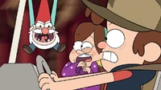 | 6 de Octubre de 2012 |
| 2 | "La Leyenda del Monstruo del Lago" | 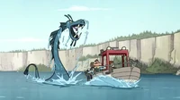 | 7 de Octubre de 2012 |
| 3 | "Los Cazadores de Cabezas" | 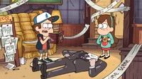 | 13 de Octubre de 2012 |
| 4 | "La mano que mece a Mabel" | 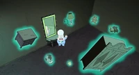 | 14 de Octubre de 2012 |
| 5 | "La Tienda Embrujada" | 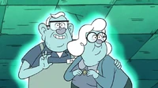 | 20 de Octubre de 2012 |
| 6 | "Dipper vs. Hombría" | 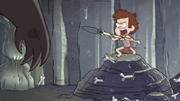 | 21 de Octubre de 2012 |
| 7 | "Doble Dipper" | 27 de Octubre de 2012 | |
| 8 | "Tesoro Irracional" | 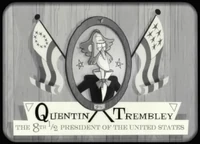 | 28 de Octubre de 2012 |
| 9 | "Súper Halloween" | 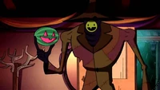 | 31 de Octubre de 2012 |
| 10 | "El Cerdito del Viajero del Tiempo" | 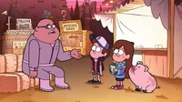 | 6 de Enero de 2013 |
| 11 | "Los busca-pleitos" | 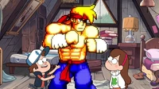 | 13 de Enero de 2013 |
| 12 | "El pequeño Dipper" | 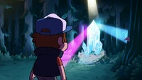 | 20 de Enero de 2013 |
| 13 | "Hoy manda Mabel" | 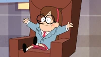 | 20 de Abril de 2013 |
| 14 | "¡Pozo sin Fondo!" | 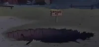 | 4 de Mayo de 2013 |
| 15 | "En lo profundo" | 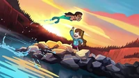 | 11 de Mayo de 2013 |
| 16 | "La Alfombra Mágica" | 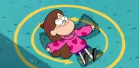 | 18 de Mayo 2013 |
| 17 | "Locura por los Chicos" | 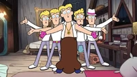 | 25 de Mayo de 2013 |
| 18 | "El Cerdito o la Vida" | 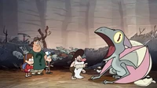 | 31 de Agosto de 2013 |
| 19 | "Fuga de ensueño" | 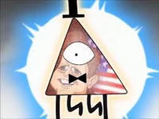 | 7 de Septiembre de 2013 |
| 20 | "El Gigantesco Gideon" | 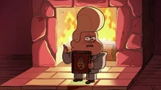 | 8 de Septiembre |